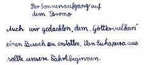

Plötzlich fiel vor uns steil ein Abrund ab. Wir standen am Rande des Kratersees. Dieser war aber völlig leer, wird aber "Laut Pasir", das heißt "Sandmeer" genannt. In der Mitte erhoben sich zwei Bergstöcke. Aus dem einen stieg milchigweißer Rauch. Es war der Bromo.
Wir ritten nun weiter in Richtung des Kraters. Als wir auf einem kleinen Hügel ankamen, sahen wir die Sonne als glühenden Ball hinter dem Horizont auftauchen. Aber schade!
Als wir dann am Kraterrand standen, war der starke Schwefelgeruch wie weggeweht. Das Loch des Kraters war wohl an die fünfzig Meter tief. Auf seinem Boden waren mehrere kleine Schlote. Aus diesen Löchern kam stoßweise Schwefeldampf. Diese kleinen Ausbrüche waren von Donnern begleitet, welches wir schon vorher gehört hatten. Aber auch aus einigen kleinen Schwefelflecken kam Schwefeldampf.  Die schönsten Bilder vom Bromo/Tengger gibt es auf GunungBagging